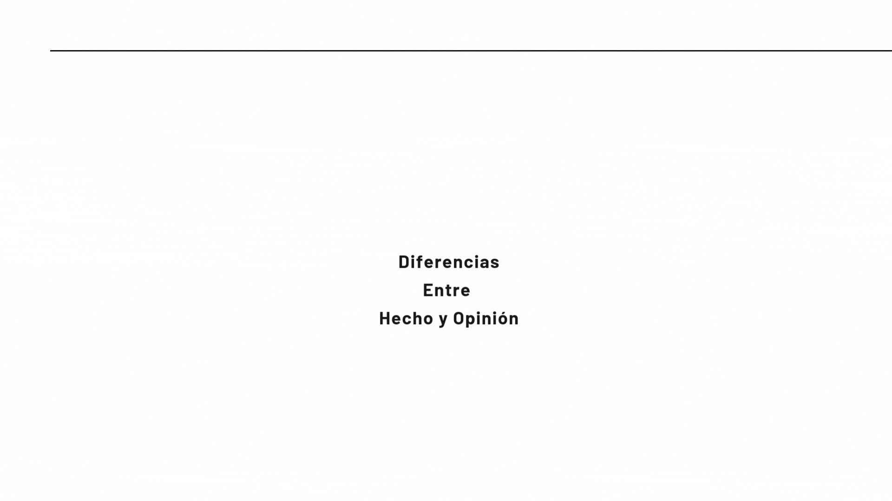

-
Diferencia entre hecho y opinión
Hecho: se puede comprobar; es decir, se puede verificar que ocurrió en tal lugar, a tal hora, con tales personas involucradas y trajo tales consecuencias. Un hecho es algo completamente real y objetivo.
Opinión: es un pensamiento sobre algo, ya sea sobre un hecho, una persona, cosa o lugar. Ese pensamiento o idea se entrega con argumentos, los cuales pueden cambiar con el tiempo.

Cómo construir una opinión basada en argumentos
Respeto por opiniones distintas
Respetar opiniones diferentes es aceptar que cada persona puede pensar distinto. Significa escuchar con atención, entender al otro y no juzgar ni atacar sus ideas.
El respeto a las opiniones diferentes implica:
Escuchar activamente
|
Prestar atención a lo que la otra persona dice, mostrando interés y empatía. |
Hacer preguntas
|
Intentar comprender mejor la perspectiva de la otra persona, haciendo preguntas abiertas. |
 |
Reconocer las diferencias
 |
Aceptar que la otra persona tiene una visión diferente del mundo. |
Buscar puntos en común
|
Identificar aspectos en los que se puede estar de acuerdo. |
Ser respetuoso y empático
|
Tratar a la otra persona con amabilidad y comprensión. |
Considerar la perspectiva de la otra persona
|
Entender que la otra persona tiene sus propios motivos para pensar de esa manera. |
 |